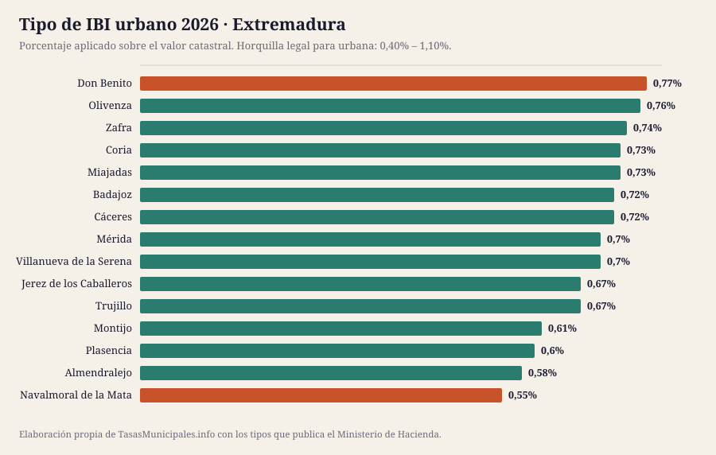
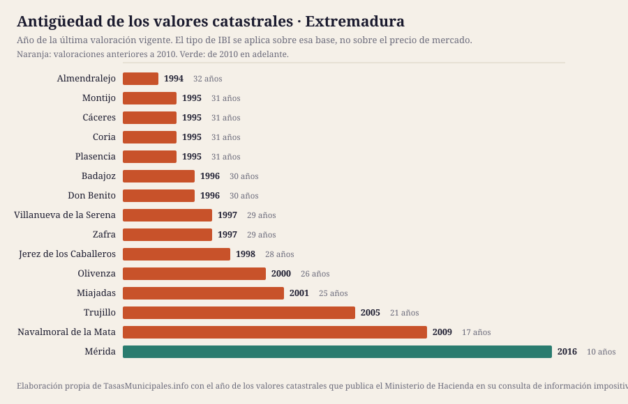

IBI, tasa de basuras y plusvalía en Extremadura 2026
Esta guía reúne el IBI, la plusvalía municipal, el impuesto de circulación y las bonificaciones de los 15 municipios de Extremadura que cubrimos, con el detalle de cada uno y una tabla para compararlos de un vistazo. Población cubierta: 545.740 habitantes.
Lo que cuesta el IBI en Extremadura en 2026
El tipo de IBI urbano en Extremadura se mueve entre el 0,55% de Navalmoral de la Mata y el 0,77% de Don Benito, con una media de 0,68% en los 15 municipios analizados. Esa horquilla parece pequeña, pero sobre un valor catastral de 50.000 € supone una diferencia de 110 € al año según dónde esté el inmueble: 275 € en Navalmoral de la Mata frente a 385 € en Don Benito.
El tipo no lo explica todo: sobre él se aplica el valor catastral, y en Extremadura las valoraciones vigentes van de 1994 en Almendralejo a 2016 en Mérida. En 14 de los 15 municipios con dato la última valoración es anterior a 2010, así que la base del recibo arrastra el mercado inmobiliario de entonces. El año de los valores de cada municipio está en la tabla, tal y como lo publica el Ministerio de Hacienda.
Aquí no publicamos el importe de la tasa de residuos ni las fechas de cobro de cada municipio: no existe fuente estatal que los recoja y preferimos el hueco a un dato sin respaldo. Lo que sí fija la ley es el plazo por defecto del IBI, del 1 de septiembre al 20 de noviembre cuando la ordenanza no señala otro (art. 62.3 de la Ley General Tributaria). La mecánica general del impuesto está en las guías de IBI 2026, bonificaciones y plusvalía; aquí van los datos de Extremadura.
Ficha fiscal de cada municipio
Tabla comparativa: el IBI en los 15 municipios de Extremadura
Ordenable por cualquier columna. Todas las cifras salen de la consulta de información impositiva del Ministerio de Hacienda. «Cuota IBI» aplica el tipo de cada municipio a un valor catastral común de 50.000 €; con el de tu recibo, usa la calculadora. «Valores catastrales» es el año de la última valoración vigente, que determina la base sobre la que se aplica el tipo.
| Municipio | Habitantes | IBI urbano | IBI rústico | Cuota IBI (VC 50.000 €) | Valores catastrales | Tipo BICE |
|---|---|---|---|---|---|---|
| Badajoz | 150.209 | 0,72% | 0,9% | 360 € | 1996 | 1,1% |
| Cáceres | 96.651 | 0,72% | 0,87% | 360 € | 1995 | 1,3% |
| Mérida | 60.225 | 0,7% | 0,52% | 350 € | 2016 | 1,3% |
| Plasencia | 40.132 | 0,6% | 0,6776% | 300 € | 1995 | 1,3% |
| Don Benito | 37.986 | 0,77% | 0,8% | 385 € | 1996 | 1,3% |
| Almendralejo | 34.587 | 0,58% | 0,8% | 290 € | 1994 | 1,3% |
| Villanueva de la Serena | 25.773 | 0,7% | 0,8% | 350 € | 1997 | 1,3% |
| Navalmoral de la Mata | 17.352 | 0,55% | 0,3% | 275 € | 2009 | 1,3% |
| Zafra | 16.735 | 0,74% | 0,75% | 370 € | 1997 | 1,3% |
| Montijo | 15.198 | 0,61% | 0,49% | 305 € | 1995 | 1,3% |
| Coria | 12.001 | 0,73% | 0,75% | 365 € | 1995 | 0,6% |
| Olivenza | 11.789 | 0,76% | 0,5% | 380 € | 2000 | 1,3% |
| Miajadas | 9.396 | 0,73% | 0,79% | 365 € | 2001 | 1,3% |
| Jerez de los Caballeros | 9.095 | 0,67% | 0,9% | 335 € | 1998 | 1,3% |
| Trujillo | 8.611 | 0,67% | 0,8% | 335 € | 2005 | 1,3% |


Quién gestiona y cobra el IBI en Extremadura
El recibo, el calendario y las solicitudes se tramitan donde esté la recaudación, que no siempre es el ayuntamiento:
| Provincia | Municipios en la guía | Organismo de recaudación | Estado del enlace |
|---|---|---|---|
| Badajoz | 9 | OAR, Organismo Autónomo de Recaudación de la Diputación de Badajoz | responde correctamente |
| Cáceres | 6 | Diputación de Cáceres | responde correctamente |
De ahí que no haya una fecha única para toda Extremadura: cada organismo publica su calendario.
¿Dónde se paga más y menos IBI en Extremadura?
La mediana del tipo urbano de los 15 municipios de Extremadura es del 0,70%, y queda 0,093 puntos por encima de la mediana nacional de la guía (0,61%): 47 € más al año por un inmueble de 50.000 €.
En el extremo alto está Don Benito con el 0,77%; en el bajo está Navalmoral de la Mata con el 0,55%. Ojo: un tipo alto no significa un recibo alto, porque la cuota es valor catastral × tipo. Ranking nacional →
Quién ha movido el tipo entre 2024 y 2025
En Extremadura, un municipio ha subido el tipo y un municipio lo ha bajado; el resto lo mantiene.
| Municipio | 2024 | 2025 | Variación |
|---|---|---|---|
| Cáceres | 0,75% | 0,72% | Baja 0,030 puntos |
| Almendralejo | 0,55% | 0,58% | Sube 0,030 puntos |
ICIO, impuesto de circulación y plusvalía en Extremadura
El IBI no es el único tributo que aprueba un ayuntamiento. En Extremadura, el ICIO va del 2,4% al 4% (mediana 3,5%); un turismo de 8 a 11,99 CV paga entre 42,60 € y 57,53 € al año; 9 de 14 aplican los coeficientes máximos de plusvalía del art. 107.4 TRLRHL.
| Municipio | ICIO (obras) | IVTM 8–11,99 CV | Plusvalía: tipo máximo | ¿Coeficientes al tope legal? |
|---|---|---|---|---|
| Almendralejo | 3,8% | 47,71 € | 30% | Sí |
| Badajoz | 4% | 53,61 € | 25,74% | Sí |
| Coria | 3% | 51,12 € | 30% | Sí |
| Cáceres | 3,6% | 54,00 € | 30% | No |
| Don Benito | 3% | 44,30 € | 30% | Sí |
| Jerez de los Caballeros | 2,8% | 42,60 € | 27% | No |
| Miajadas | 2,4% | 47,37 € | 25% | No |
| Montijo | 3,5% | 57,53 € | 25% | Sí |
| Mérida | 3,72% | 52,82 € | 30% | Sí |
| Navalmoral de la Mata | 2,4% | 42,60 € | 16,2% | Sí |
| Olivenza | 4% | 47,71 € | 30% | Sí |
| Plasencia | 3,59% | 49,55 € | 27,8% | No |
| Trujillo | 2,9% | 48,39 € | — | — |
| Villanueva de la Serena | 4% | 44,30 € | 30% | Sí |
| Zafra | 2,8% | 44,30 € | 25% | No |
Fuente: Ministerio de Hacienda. El guion marca lo que la consulta no publica. La tarifa completa del IVTM está en cada ficha.
Guía del impuesto de circulación → · Comparativa del IVTM → · Quién aplica el coeficiente máximo de plusvalía →
Cuándo se revisaron los valores catastrales en Extremadura
La cuota del IBI es valor catastral × tipo, así que la fecha de la última valoración colectiva pesa tanto como el porcentaje que vota el pleno. En Extremadura la mediana está en 1997, más antigua que la del conjunto de la guía (2005), y 13 de 15 municipios arrastran valores de hace 20 años o más.
| Municipio | Año de la valoración | Antigüedad | Tipo urbano |
|---|---|---|---|
| Almendralejo | 1994 | 32 años | 0,58% |
| Cáceres | 1995 | 31 años | 0,72% |
| Plasencia | 1995 | 31 años | 0,6% |
| Montijo | 1995 | 31 años | 0,61% |
| Coria | 1995 | 31 años | 0,73% |
| Badajoz | 1996 | 30 años | 0,72% |
| Don Benito | 1996 | 30 años | 0,77% |
| Villanueva de la Serena | 1997 | 29 años | 0,7% |
| Zafra | 1997 | 29 años | 0,74% |
| Jerez de los Caballeros | 1998 | 28 años | 0,67% |
| Olivenza | 2000 | 26 años | 0,76% |
| Miajadas | 2001 | 25 años | 0,73% |
| Trujillo | 2005 | 21 años | 0,67% |
| Navalmoral de la Mata | 2009 | 17 años | 0,55% |
| Mérida | 2016 | 10 años | 0,7% |
Qué es el valor catastral, cómo se consulta y cómo se corrige → · Qué implica una ponencia desfasada →
Población de los municipios de Extremadura (2020–2025)
El padrón no cambia el IBI, pero sí explica la tasa de residuos: cuando el coste del servicio se reparte entre menos vecinos, la tarifa sube. En conjunto, los 15 municipios de Extremadura que cubrimos han ganado 812 habitantes desde 2020 (7 crecen, 8 pierden población).
| Municipio | 2020 | 2025 | Variación | % |
|---|---|---|---|---|
| Badajoz | 150.984 | 150.209 | -775 | -0,5 % |
| Cáceres | 96.255 | 96.651 | +396 | +0,4 % |
| Mérida | 59.548 | 60.225 | +677 | +1,1 % |
| Plasencia | 39.860 | 40.132 | +272 | +0,7 % |
| Don Benito | 37.284 | 37.986 | +702 | +1,9 % |
| Almendralejo | 33.855 | 34.587 | +732 | +2,2 % |
| Villanueva de la Serena | 25.752 | 25.773 | +21 | +0,1 % |
| Navalmoral de la Mata | 17.163 | 17.352 | +189 | +1,1 % |
| Zafra | 16.810 | 16.735 | -75 | -0,4 % |
| Montijo | 15.504 | 15.198 | -306 | -2,0 % |
| Coria | 12.366 | 12.001 | -365 | -3,0 % |
| Olivenza | 11.912 | 11.789 | -123 | -1,0 % |
| Miajadas | 9.527 | 9.396 | -131 | -1,4 % |
| Jerez de los Caballeros | 9.196 | 9.095 | -101 | -1,1 % |
| Trujillo | 8.912 | 8.611 | -301 | -3,4 % |
Fuente: INE, padrón a 1 de enero.

Ficha fiscal de los 15 municipios de Extremadura
Cada ficha recoge el detalle de ese ayuntamiento: tipos aprobados, calendario de cobro, bonificaciones, plusvalía y enlaces oficiales donde comprobarlo.
- Badajoz — IBI 0,72% · cuota 360 € con VC de 50.000 € · valores de 1996
- Cáceres — IBI 0,72% · cuota 360 € con VC de 50.000 € · valores de 1995
- Mérida — IBI 0,7% · cuota 350 € con VC de 50.000 € · valores de 2016
- Plasencia — IBI 0,6% · cuota 300 € con VC de 50.000 € · valores de 1995
- Don Benito — IBI 0,77% · cuota 385 € con VC de 50.000 € · valores de 1996
- Almendralejo — IBI 0,58% · cuota 290 € con VC de 50.000 € · valores de 1994
- Villanueva de la Serena — IBI 0,7% · cuota 350 € con VC de 50.000 € · valores de 1997
- Navalmoral de la Mata — IBI 0,55% · cuota 275 € con VC de 50.000 € · valores de 2009
- Zafra — IBI 0,74% · cuota 370 € con VC de 50.000 € · valores de 1997
- Montijo — IBI 0,61% · cuota 305 € con VC de 50.000 € · valores de 1995
- Coria — IBI 0,73% · cuota 365 € con VC de 50.000 € · valores de 1995
- Olivenza — IBI 0,76% · cuota 380 € con VC de 50.000 € · valores de 2000
- Miajadas — IBI 0,73% · cuota 365 € con VC de 50.000 € · valores de 2001
- Jerez de los Caballeros — IBI 0,67% · cuota 335 € con VC de 50.000 € · valores de 1998
- Trujillo — IBI 0,67% · cuota 335 € con VC de 50.000 € · valores de 2005
Preguntas frecuentes sobre el IBI y las tasas en Extremadura
¿Qué municipio de Extremadura tiene el IBI más alto en 2026?
De los 15 municipios analizados, el tipo urbano más alto es el de Don Benito (0,77%) y el más bajo el de Navalmoral de la Mata (0,55%). Sobre un valor catastral de 50.000 € son 385 € frente a 275 € al año.
¿Cuál es el tipo medio de IBI en Extremadura?
La media de los 15 municipios de Extremadura que recoge esta guía es del 0,68%, con una mediana del 0,70%. La ley permite moverse entre el 0,40% y el 1,10% en urbana.
¿Cuándo se paga el IBI en Extremadura?
No hay una fecha única: la fija cada ordenanza y se aprueba cada ejercicio, por eso no publicamos fechas concretas. Cuando la ordenanza no señala otro plazo se aplica el del artículo 62.3 de la Ley General Tributaria, del 1 de septiembre al 20 de noviembre, y quien lo modifique no puede dejarlo en menos de dos meses. El calendario del año lo publica el organismo que recauda, enlazado en la ficha de cada municipio.
¿Cuánto se paga de basuras en Extremadura?
No lo publicamos porque no podemos verificarlo: la tarifa está en la ordenanza fiscal de cada ayuntamiento y ninguna administración estatal las reúne. La Ley 7/2022 obliga desde el 10 de abril de 2025 a cobrar una tasa de residuos específica, diferenciada y no deficitaria (art. 11.3), y solo exige comunicarla a la comunidad autónoma (art. 11.5). En la guía de la tasa de residuos explicamos dónde localizar la tuya.
¿Quién cobra el IBI en Extremadura?
En Extremadura la recaudación de buena parte de los ayuntamientos corre a cargo de: OAR, Organismo Autónomo de Recaudación de la Diputación de Badajoz y Diputación de Cáceres. El resto la lleva su propio ayuntamiento. Cada ficha indica cuál corresponde y enlaza dónde consultar el calendario.
¿Dónde cuesta más el impuesto de circulación en Extremadura?
Por un turismo de 8 a 11,99 caballos fiscales, el más caro de Extremadura es Montijo con 57,53 € al año y el más barato Navalmoral de la Mata con 42,60 €. La cuota mínima que fija la ley es de 34,08 €.
Qué está verificado en esta página
| Dato | Estado en Extremadura |
|---|---|
| Tipos de IBI, rústica, BICE y año de los valores catastrales | 15 de 15 contrastados con el Ministerio de Hacienda |
| Webs oficiales de los ayuntamientos | 1 de 1 respondían el 2026-07-25 |
| Tasa de residuos y fechas de cobro | No se publican: las fija cada ordenanza, no hay registro estatal y no hemos podido acceder a una fuente primaria |
Si un dato no coincide con lo que dice tu ayuntamiento, manda la ordenanza publicada en el boletín oficial. Qué fuente respalda cada dato y cómo corregimos → · Avisar de un error
Normativa citada en esta página
- Real Decreto Legislativo 2/2004 (texto refundido de la Ley Reguladora de las Haciendas Locales)
- Real Decreto Legislativo 1/2004 (texto refundido de la Ley del Catastro Inmobiliario)
- Ley 7/2022, de 8 de abril, de residuos y suelos contaminados para una economía circular
- Real Decreto-ley 26/2021, de 8 de noviembre (adaptación del IIVTNU a la jurisprudencia constitucional)
- Sentencia del Tribunal Constitucional 182/2021, de 26 de octubre
- Ley 58/2003, de 17 de diciembre, General Tributaria
- Sede Electrónica del Catastro